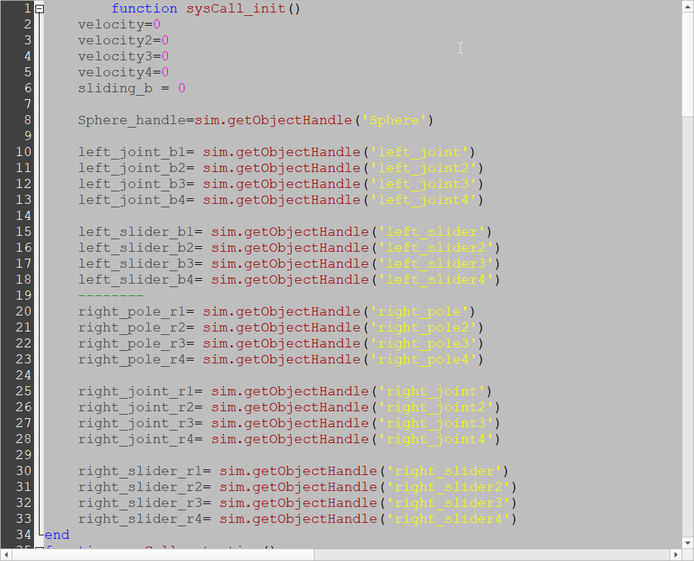
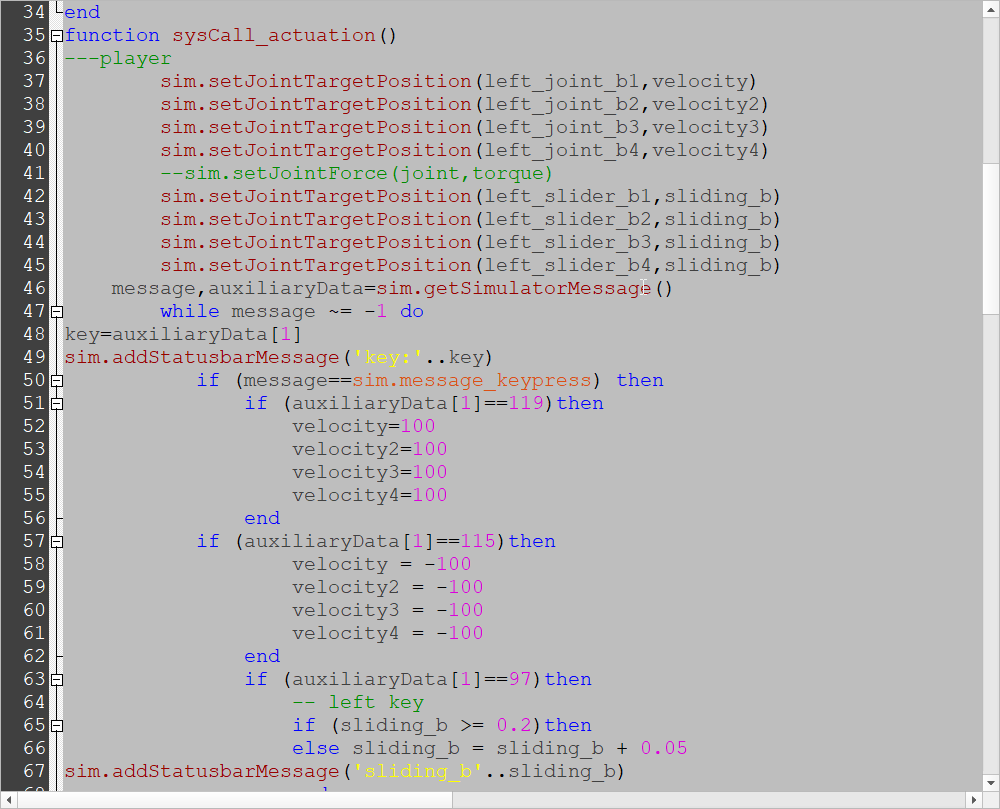
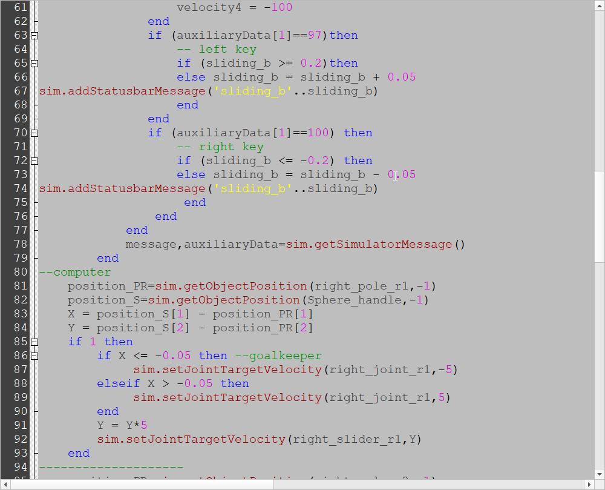
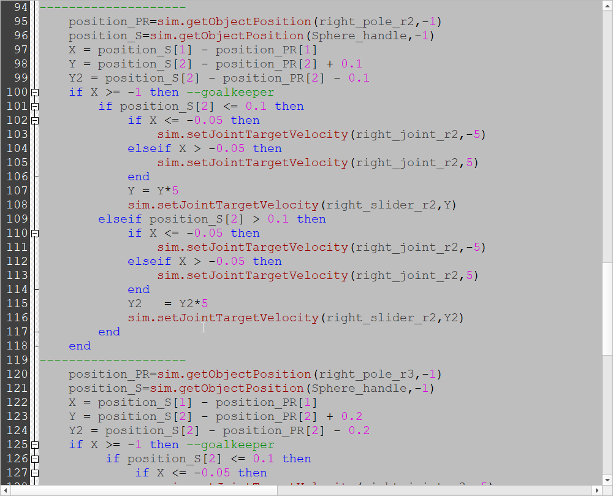
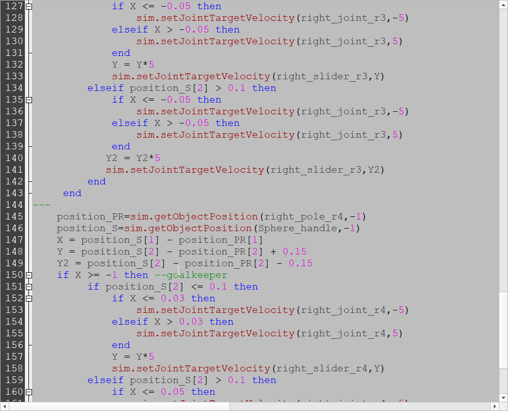
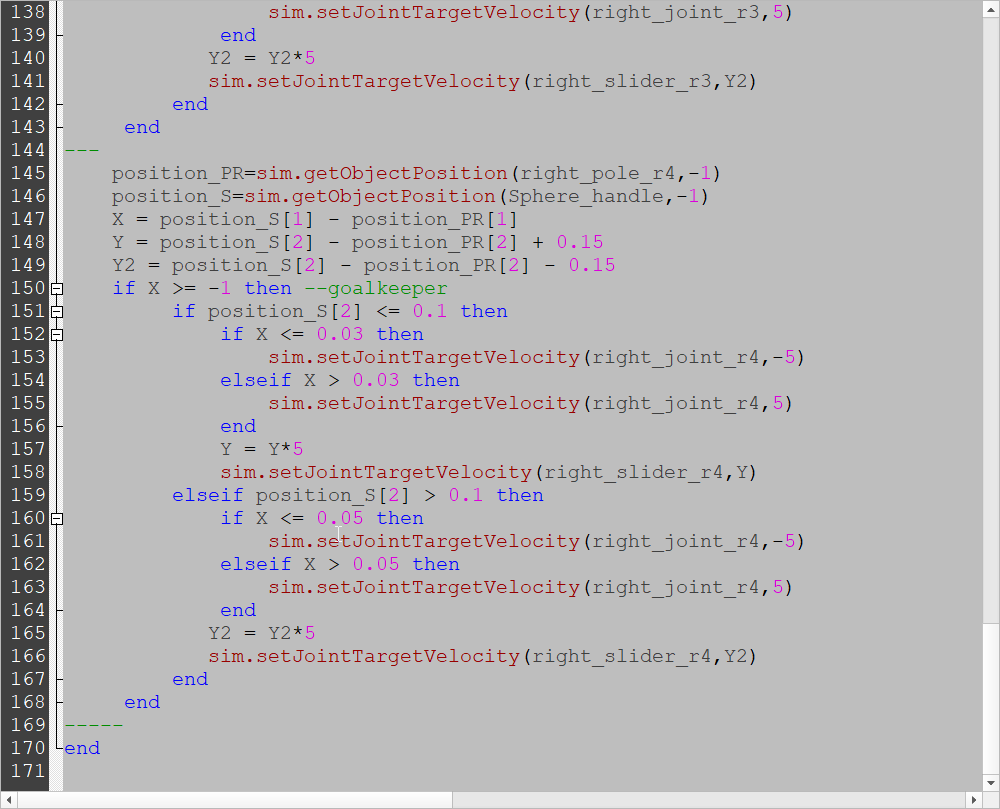

40623225-Week
Week4:
如何建立可攜系統:
1.先將Python、Scite、HxD、Kdiff3和TinyC都下載好，之後對這些檔案進行解壓縮。


1.1對python進行解壓縮
第1個和第4個不勾選

可以選擇要安裝的位置

2.打開HxD，對P37->Scripts裡的pip檔做更改，先用搜尋找C:，之後修改成y:\p37\python


3.打開Scite，打開Options->Open Global Options File和View->Line Numbers，之後搜尋code，修改298行和299行

4.在資料夾中搜尋cpp，用scite對cpp進行修改，修改475行和476行，並新增cc=y:\tcc\tcc.exe -run 和ccc=y:\tcc\tcc.exe -run這兩行在476行底下，還有修改487和486行


5.在資料夾中搜尋python，修改152行和160行


6.在scite中建立兩個新的檔案，其中一個存為start.bat，另一個存為stop.bat

7.可攜系統製作影片
Week5:
和組員一起討論如何利用V-rep讓手足球機構可以正常運作、並討論如何讓足球員偵測到碰撞、還有討論了關於偵測進門的時候該有什麼反應。
Week6:
和組員工共同完成BubbleRob tutorial的模擬，也終於對V-rep更加的熟悉，不過還是需要更加努力，因為還有更多需要學習的地方。

BubbleRob 操作影片
Week7:
因為連假的的關係，所以這周並沒有做太多的事情，大概就是放假前和組員討論關於分配工作的問題，本來是每個人的心得都交給一個人負責推送，其他人負責忙其他東西，像是V-rep模擬、Kungit手冊還有onshape繪圖，但是老師上課說必須要每個人都有commit資料，所以我們就改成大家推送自己的每週進度和心得，不過會遇到的問題就是可能產生衝突，所以在這部分也和大家討論好處理方式了。
Week8:
這週開始做實習任務三，可是下課前遇到一個問題，還是沒有解決，下禮拜會再嘗試解決。
1.一開始先在onshape將圖繪製出來

之後要進行轉檔，需要將檔案轉成stl檔。

這裡要將檔案選stl檔，並且將尺寸改為mm。

2.把轉好的stl檔拉進去v-rep做修改。拉進去之後為下圖

將左邊兩個檔案一起選起來後，按右鍵Menu bar --> Edit --> Grouping/Merging --> Divide selected shapes

還是一樣將左邊兩個選起來後，按右鍵Menu bar --> Edit -> Grouping/Merging --> Merge selected shapes

當上述兩個步驟完成後，兩個檔案會合併成一個檔案，之後對檔案右鍵Menu bar --> Edit --> Morph selection into convex shapes

結果如下

再來再對這個檔案右鍵Menu bar --> Edit --> Decimate selected shape

再右鍵一次Menu bar --> Edit --> Extract inside of selected shape

正常來說會變成

可是不知道為甚麼會變成這樣，所以還需要再和組員討論看看是哪邊的問題。

Week10:
如何利用GitExtensions進行各版次內容的checkout
1.先在mde.tw的網際內容管理裡面找到GitExtensions的標籤，之後對GitExtensions.7z進行安裝，並且加壓縮在自己的隨身碟裡。


2.之後打開GitExtensions，因為會用到Kdiff3，所以需要給Kdiff3路徑，從資料夾找到Kdiff3.exe檔案。


選取Kdiff3檔案後，完成如下。

3.之後還需要對Git的路徑(Paths)做更改，需改成在Y底下的HOME，改好之後要按儲存。

4.以上步驟都改好之後，就可以開始改需要的檔案，而我這邊是利用第4組的倉儲做更改。

5.記得在回到以前的版次時，將Commit的資料做Reset，Reset完之後就可以右鍵對想要看的版次Checkout Revision。


6.對檔案點兩下即可觀看當下版次所推送的所有資料。

Week11:
這週和組員共同製作v-rep手足球，目前足球員可以手動操作，和可以操作桿子左右移動而且不會超出框外，因為有個固定點，雖然現在不會超出，可是下方的距離還是會一直增加，這點需要和組員再多多討論，下週開始會試著讓球員自動偵測並且踢球。


Week12:
如何限制手足球桿子的移動距離
打開每一根桿子的程式碼，將下列程式碼輸入進去
if (sliding <= -0.15) then (限制右邊的移動距離只要小於或等於-0.15)
sliding = -0.15 (移動值就只能等於-0.15，不會在小了)
else
if (sliding >= 0.15) then (限制左邊的移動距離只要大於或等於0.15)
sliding = 0.15 (移動值就只能等於0.15，不會在大了)
else

Week13:
這週和組員一起討論自動擊球的程式，目前已經將自動擊球的程式完成，也可以正常操作手動對自動，這週還有討論送球機構該如何繪製，最後討論出來後，我們打算利用螺旋的方式進行送球。







Week14:
在上禮拜已經將其中一邊的程式寫出來了，也可以正常的運作，這周就將另外一邊設置完成，可是並沒有如期完成，反而又沿生出了一些問題，像是球員的偵測距離不正確，踢球的角度也不對，下周將會和組員一起討論，這週用的檔案是比較舊版本的，所以送球機構不是新版的。
Week15:
這週和組員討論完後，已經共同的將自動對自動的模擬完成了，所有的球員都可偵測到求並且踢球，不過左邊的只能向前踢，右邊的也只能向前踢，兩邊都沒辦法往自己的後面踢球，送球機構也已經完成了，大致上基本都已經完成，不過我們每人再分配一個部分，試著將手足球模擬的更好，而我是分配到手動對手動的部分。
機器對機器模擬影片
Week16:
這週開始將分配到的工作-手足球手動對手動變得更好，送球機構也已經加進去了，程式變得更簡單明瞭，也加了攝影機讓操作者更清楚的看到目前球的位子，而這週是備考週，所以一邊準備十七週要的個人倉儲和期末影片，一邊將自己的網站和分組網站做修改。
下載連結:手足球手動對手動最後版本
手足球手動對手動最後版本模擬影片
Week17:
評分比例:
學員出席 (20%): 20
Github 倉儲管理 (20%): 15
Onshape 協同操作 (20%): 0
V-rep 模擬 (20%): 20
程式開發 (20%): 15
自評分數: 70
40623224-Week << Previous Next >> 40623226-Week